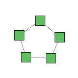
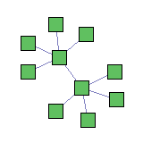
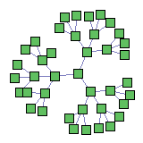

The following are various topologies you can use to experiment with DETERLab Core.
Toy topologies
LAN

set ns [new Simulator]
source tb_compat.tcl
# Change this to a number of nodes you want
set NODES 5
set lanstr ""
for {set i 0} {$i < $NODES} {incr i} {
set node($i) [$ns node]
append lanstr "$node($i) "
}
# Change the BW and delay if you want
set lan0 [$ns make-lan "$lanstr" 100Mb 0ms]
$ns rtproto Static
$ns run
Ring

set ns [new Simulator]
source tb_compat.tcl
# Change this to a number of nodes you want
set NODES 5
set node(0) [$ns node]
for {set i 1} {$i < $NODES} {incr i} {
set node($i) [$ns node]
set lastindex [expr $i-1]
# Change BW and delay if you want
set Link$i [$ns duplex-link $node($i) $node($lastindex) 100Mb 0ms DropTail]
}
set lastindex [expr $i-1]
# Change BW and delay if you want
set Link$i [$ns duplex-link $node(0) $node($lastindex) 100Mb 0ms DropTail]
$ns rtproto Static
$ns run
Dumbbell

set ns [new Simulator]
source tb_compat.tcl
# Change this to a number of nodes you want
set NODES 10
set rem 0
set l 0
for {set i 0} {$i < 2} {incr i} {
set node($rem) [$ns node]
for {set j 1} {$j < $NODES/2} {incr j} {
set index [expr $rem+$j]
set node($index) [$ns node]
# Change BW and delay if you want
set Link$l [$ns duplex-link $node($rem) $node($index) 100Mb 0ms DropTail]
set l [expr $l+1]
}
set rem [expr $rem+$NODES/2]
}
set rem [expr $NODES/2]
# Change BW and delay if you want
set Link$l [$ns duplex-link $node($rem) $node(0) 100Mb 0ms DropTail]
$ns rtproto Static
$ns run
Tree

set ns [new Simulator]
source tb_compat.tcl
# Change fanout if you want but bear in mind that some of
# our nodes have only 5 interfaces, so max # of experimental
# interfaces (and fan out) is 4
set FANOUT 3
# Change depth if you want
set DEPTH 3
set node(0) [$ns node]
set lastj 0
set f $FANOUT
set lastl 0
for {set i 0} {$i < $DEPTH} {incr i} {
for {set j 1} {$j <# $f} {incr j} {
set index [expr $lastj+$j]
set node($index) [$ns node]
set lastindex [expr ($index-1)/$FANOUT]
# Change BW and delay if you want
set Link$lastl [$ns duplex-link $node($index) $node($lastindex) 100Mb 0ms DropTail]
set lastl [expr $lastl+1]
}
set f [expr $f*$FANOUT]
set lastj [expr $lastj+$j-1]
}
$ns rtproto Static
$ns run
Real AS topologies
Because most of our PCs have up to 4 experimental interfaces, note that some of these topologies may have to be modified to have a fan out of at most 4.